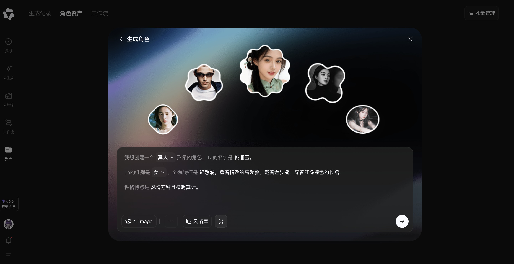
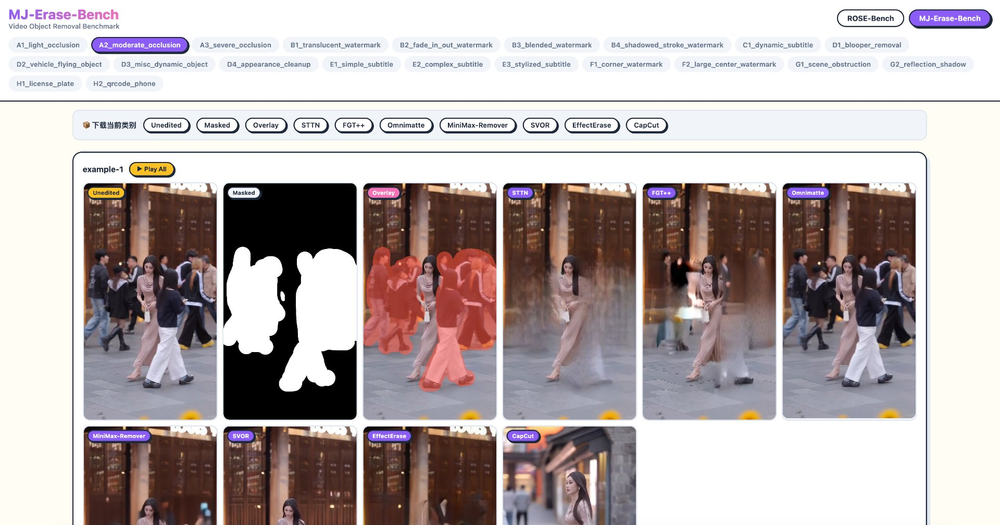

INTERNSHIP PROJECTS
·
04 / 08
实战档案
4 个来自大厂实习的 AI 创作项目，覆盖模型策略测试、视频消除评测、创作者平台设计与 Web 端 AI 创作中台搭建。每个项目都包含真实的业务问题、角色贡献、量化结果与当前状态。

PROJECT 01
AI Studio 模型策略测试
AI 片场 1.0 灰度版 · 15s~1min 短片

PROJECT 02
MJ-Erase-Bench
视频消除评测 · 27 类场景 × 10+ 模型

PROJECT 03
AI 创作者平台设计
Prompt 模板 · LoRA 创作 · 任务线上化

PROJECT 04
创作相机 Web 端
AI 创作中台 0→1 · 6 功能 + 5 场漫展